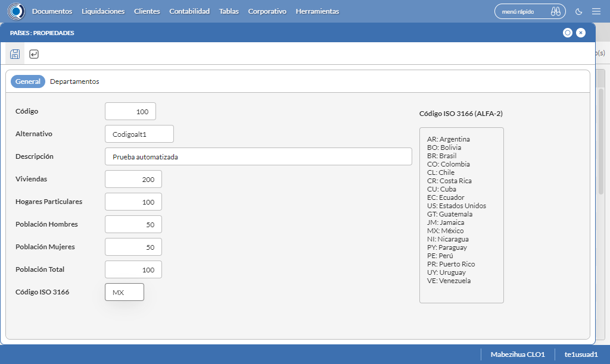
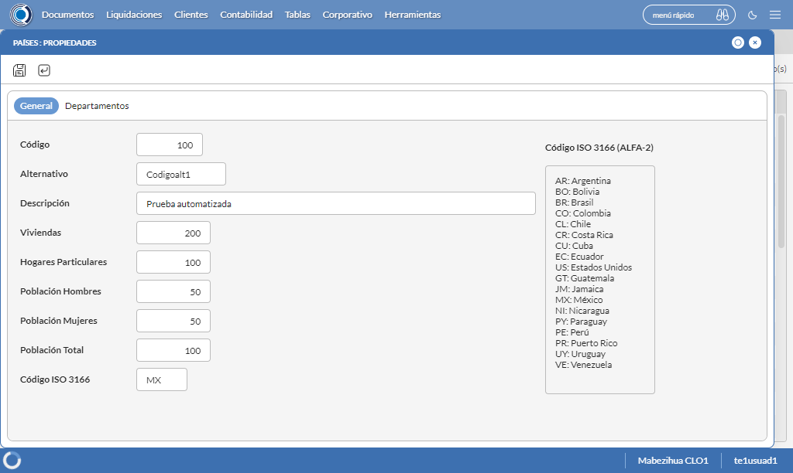

Desarrollado por : Area de Testing PWST
Fecha y hora de inicio : 2022-08-26 09:07:21
Duracion : 0:04:46.909832
Resultado : Total 8，Correctos 4 ，Errores 4 ，Taza de resultado 50.00%
Resumen 50.00% Errores 4 Fallidos 0 Correctos 4 Test realizados 8
| Caso de Prueba | Total | Correctos | Fallido | Error | Detalles | Captura del error |
| UbicacionesGeograficas.Test: Escenario 1 de Ubicaciones Geograficas | 8 | 4 | 0 | 4 | Detalles | |
test |
pt1_1: 2022-08-26 09:07:23,742 - root - INFO - Se abre el chrome
2022-08-26 09:07:27,425 - root - INFO - Entra a la URL
2022-08-26 09:07:27,546 - root - INFO - Maximiza la pantalla
2022-08-26 09:07:30,600 - root - INFO - Cambia al frame
|
|
||||
test_000: Ingresa a la base de datos |
pt1_2: 2022-08-26 09:07:33,687 - root - INFO - Escribe el usuario
2022-08-26 09:07:33,800 - root - INFO - Escribe la contraseña
2022-08-26 09:07:33,941 - root - INFO - Se dio clic en el boton ingresar
2022-08-26 09:07:35,741 - root - INFO - Ejecutar Enterprise
2022-08-26 09:07:35,741 - root - INFO - Captura: C:\xampp\htdocs\versiones\automatizaciones\AutoPWST\01UG\report\img screen：20220826_09_07_35.png
2022-08-26 09:07:39,970 - root - INFO - Cambia entre pestañas
|

|
||||
test_001: Abre menu y ejecuta pantalla |
pt1_3: 2022-08-26 09:07:45,118 - root - INFO - Abre el menu completo
2022-08-26 09:08:01,068 - root - INFO - Abre la pantalla de Paises
2022-08-26 09:08:01,132 - root - INFO - La pantalla ejecutada es Paises.
2022-08-26 09:08:01,132 - root - INFO - Captura: C:\xampp\htdocs\versiones\automatizaciones\AutoPWST\01UG\report\img screen：20220826_09_08_01.png
2022-08-26 09:08:01,299 - root - INFO - Se presiona el boton 'Nuevo', para crear un nuevo registro.
|

|
||||
test_002: Abre la ventana de nuevo y crear un registro |
pt1_4: 2022-08-26 09:08:04,362 - root - INFO - Se abrio la pantalla para el ingreso de un registro nuevo.
2022-08-26 09:08:04,402 - root - INFO - El campo 'Codigo' si se encuentra visible.
2022-08-26 09:08:04,440 - root - INFO - El campo 'Alternativo' si se encuentra visible.
2022-08-26 09:08:04,480 - root - INFO - El campo 'Descrición' si se encuentra visible.
2022-08-26 09:08:04,518 - root - INFO - El campo 'Viviendas' si se encuentra visible.
2022-08-26 09:08:04,562 - root - INFO - El campo 'Hogares Particulares' si se encuentra visible.
2022-08-26 09:08:04,607 - root - INFO - El campo 'Población Hombres' si se encuentra visible.
2022-08-26 09:08:04,652 - root - INFO - El campo 'Población Mujeres' si se encuentra visible.
2022-08-26 09:08:04,690 - root - INFO - El campo 'Población Total' si se encuentra visible.
2022-08-26 09:08:04,728 - root - INFO - El campo 'Código ISO 3166' si se encuentra visible.
2022-08-26 09:08:04,798 - root - INFO - Ingresa el codigo del nuevo registro
2022-08-26 09:08:07,942 - root - INFO - Ingresa el codigo alternativo del nuevo registro
2022-08-26 09:08:11,082 - root - INFO - Ingresa la descripción del nuevo registro
2022-08-26 09:08:14,199 - root - INFO - Ingresa el número de viviendas del nuevo registro
2022-08-26 09:08:17,325 - root - INFO - Ingresa el número de hogares particulares del nuevo registro
2022-08-26 09:08:20,443 - root - INFO - Ingresa el número de Población de hombres del nuevo registro
2022-08-26 09:08:23,579 - root - INFO - Ingresa el número de Población de mujeres del nuevo registro
2022-08-26 09:08:26,714 - root - INFO - Ingresa el número de Población Total del nuevo registro
2022-08-26 09:08:29,834 - root - INFO - Ingresa el Codigo ISO del nuevo registro
2022-08-26 09:08:34,845 - root - INFO - Captura: C:\xampp\htdocs\versiones\automatizaciones\AutoPWST\01UG\report\img screen：20220826_09_08_34.png
2022-08-26 09:08:45,160 - root - INFO - Se hace el cambio de pestaña para continuar con el registro nuevo
2022-08-26 09:08:45,301 - root - INFO - Se presiona el boton 'Nuevo', para crear un nuevo registro.
2022-08-26 09:08:45,902 - root - INFO - El campo 'Codigo' si se encuentra visible.
2022-08-26 09:08:45,947 - root - INFO - El campo 'Alternativo' si se encuentra visible.
2022-08-26 09:08:45,985 - root - INFO - El campo 'Descrición' si se encuentra visible.
2022-08-26 09:08:46,023 - root - INFO - El campo 'Impuesto' si se encuentra visible.
2022-08-26 09:08:46,062 - root - INFO - El campo 'Viviendas' si se encuentra visible.
2022-08-26 09:08:46,102 - root - INFO - El campo 'Hogares Particulares' si se encuentra visible.
2022-08-26 09:08:46,141 - root - INFO - El campo 'Población Hombres' si se encuentra visible.
2022-08-26 09:08:46,179 - root - INFO - El campo 'Población Mujeres' si se encuentra visible.
2022-08-26 09:08:46,218 - root - INFO - El campo 'Población Total' si se encuentra visible.
2022-08-26 09:08:46,300 - root - INFO - Ingresa el codigo del nuevo registro
2022-08-26 09:08:49,422 - root - INFO - Ingresa el codigo alternativo del nuevo registro
2022-08-26 09:08:52,576 - root - INFO - Ingresa la descripción del nuevo registro
2022-08-26 09:09:08,226 - root - INFO - Ingresa el número de viviendas del nuevo registro
2022-08-26 09:09:11,348 - root - INFO - Ingresa el número de hogares particulares del nuevo registro
2022-08-26 09:09:14,458 - root - INFO - Ingresa el número de Población de hombres del nuevo registro
2022-08-26 09:09:17,580 - root - INFO - Ingresa el número de Población de mujeres del nuevo registro
2022-08-26 09:09:20,709 - root - INFO - Ingresa el número de Población Total del nuevo registro
2022-08-26 09:09:23,843 - root - INFO - Se hace el cambio de pestaña para continuar con el registro nuevo
2022-08-26 09:09:26,981 - root - INFO - Se presiona el boton 'Nuevo', para crear un nuevo registro.
2022-08-26 09:09:28,102 - root - INFO - El campo 'Localidad' si se encuentra visible.
2022-08-26 09:09:28,139 - root - INFO - El campo 'Alternativo' si se encuentra visible.
2022-08-26 09:09:28,176 - root - INFO - El campo 'Descrición' si se encuentra visible.
2022-08-26 09:09:28,213 - root - INFO - El campo 'Viviendas' si se encuentra visible.
2022-08-26 09:09:28,249 - root - INFO - El campo 'Hogares Particulares' si se encuentra visible.
2022-08-26 09:09:28,287 - root - INFO - El campo 'Población Hombres' si se encuentra visible.
2022-08-26 09:09:28,323 - root - INFO - El campo 'Población Mujeres' si se encuentra visible.
2022-08-26 09:09:28,360 - root - INFO - El campo 'Población Total' si se encuentra visible.
2022-08-26 09:09:28,469 - root - INFO - Ingresa el codigo del nuevo registro
2022-08-26 09:09:31,602 - root - INFO - Ingresa el codigo alternativo del nuevo registro
2022-08-26 09:09:34,752 - root - INFO - Ingresa la descripción del nuevo registro
2022-08-26 09:09:37,882 - root - INFO - Ingresa el número de viviendas del nuevo registro
2022-08-26 09:09:40,997 - root - INFO - Ingresa el número de hogares particulares del nuevo registro
2022-08-26 09:09:44,127 - root - INFO - Ingresa el número de Población de hombres del nuevo registro
2022-08-26 09:09:47,288 - root - INFO - Ingresa el número de Población de mujeres del nuevo registro
2022-08-26 09:09:50,425 - root - INFO - Ingresa el número de Población Total del nuevo registro
2022-08-26 09:09:53,560 - root - INFO - Se hace el cambio de pestaña para continuar con el registro nuevo
2022-08-26 09:09:56,688 - root - INFO - Se presiona el boton 'Nuevo', para crear un nuevo registro.
2022-08-26 09:09:57,293 - root - INFO - El campo 'Código' si se encuentra visible.
2022-08-26 09:09:57,334 - root - INFO - El campo 'Alternativo' si se encuentra visible.
2022-08-26 09:09:57,373 - root - INFO - El campo 'Descrición' si se encuentra visible.
2022-08-26 09:09:57,414 - root - INFO - El campo 'Viviendas' si se encuentra visible.
2022-08-26 09:09:57,452 - root - INFO - El campo 'Hogares Particulares' si se encuentra visible.
2022-08-26 09:09:57,503 - root - INFO - El campo 'Población Hombres' si se encuentra visible.
2022-08-26 09:09:57,547 - root - INFO - El campo 'Población Mujeres' si se encuentra visible.
2022-08-26 09:09:57,584 - root - INFO - El campo 'Población Total' si se encuentra visible.
2022-08-26 09:09:57,694 - root - INFO - Ingresa el codigo del nuevo registro
2022-08-26 09:10:00,857 - root - INFO - Ingresa el codigo alternativo del nuevo registro
2022-08-26 09:10:04,004 - root - INFO - Ingresa la descripción del nuevo registro
2022-08-26 09:10:07,127 - root - INFO - Ingresa el número de viviendas del nuevo registro
2022-08-26 09:10:10,246 - root - INFO - Ingresa el número de hogares particulares del nuevo registro
2022-08-26 09:10:13,357 - root - INFO - Ingresa el número de Población de hombres del nuevo registro
2022-08-26 09:10:16,473 - root - INFO - Ingresa el número de Población de mujeres del nuevo registro
2022-08-26 09:10:19,637 - root - INFO - Ingresa el número de Población Total del nuevo registro
2022-08-26 09:10:22,769 - root - INFO - Se da clic en el boton Guardar; se debe crear un nuevo registro.
2022-08-26 09:10:25,906 - root - INFO - Se da clic en el boton Guardar; se debe crear un nuevo registro.
2022-08-26 09:10:29,047 - root - INFO - Se hace el cambio de pestaña para continuar con el registro nuevo
2022-08-26 09:10:32,166 - root - INFO - Se presiona el boton 'Nuevo', para crear un nuevo registro.
2022-08-26 09:10:32,733 - root - INFO - El campo 'Artículo' si se encuentra visible.
2022-08-26 09:10:32,772 - root - INFO - El campo 'Impuesto' si se encuentra visible.
2022-08-26 09:11:07,877 - root - INFO - Se da clic en el boton Guardar; se debe crear un nuevo registro.
2022-08-26 09:11:10,990 - root - INFO - Se da clic en el boton Guardar; se debe crear un nuevo registro.
2022-08-26 09:11:14,132 - root - INFO - Se da clic en el boton Guardar; se debe crear un nuevo registro.
|
 | ||||
test_003: Repetir el registro creado anteriormente |
ft1_5: 2022-08-26 09:11:17,255 - root - INFO - Se presiona el boton 'Refrescar', para crear un nuevo registro igual al anterior.
2022-08-26 09:11:27,397 - root - INFO - Se presiona el boton 'Nuevo', para crear un nuevo registro igual al anterior.
2022-08-26 09:11:32,495 - root - INFO - Se abrio la pantalla para el ingreso de un registro nuevo.
2022-08-26 09:11:32,535 - root - INFO - El campo 'Codigo' si se encuentra visible.
2022-08-26 09:11:32,575 - root - INFO - El campo 'Alternativo' si se encuentra visible.
2022-08-26 09:11:32,614 - root - INFO - El campo 'Descrición' si se encuentra visible.
2022-08-26 09:11:32,653 - root - INFO - El campo 'Viviendas' si se encuentra visible.
2022-08-26 09:11:32,695 - root - INFO - El campo 'Hogares Particulares' si se encuentra visible.
2022-08-26 09:11:32,735 - root - INFO - El campo 'Población Hombres' si se encuentra visible.
2022-08-26 09:11:32,774 - root - INFO - El campo 'Población Mujeres' si se encuentra visible.
2022-08-26 09:11:32,814 - root - INFO - El campo 'Población Total' si se encuentra visible.
2022-08-26 09:11:32,869 - root - INFO - El campo 'Código ISO 3166' si se encuentra visible.
2022-08-26 09:11:32,942 - root - INFO - Ingresa el codigo del nuevo registro
2022-08-26 09:11:36,078 - root - INFO - Ingresa el codigo alternativo del nuevo registro
2022-08-26 09:11:39,265 - root - INFO - Ingresa la descripción del nuevo registro
2022-08-26 09:11:42,369 - root - INFO - Ingresa el número de viviendas del nuevo registro
2022-08-26 09:11:45,519 - root - INFO - Ingresa el número de hogares particulares del nuevo registro
2022-08-26 09:11:48,625 - root - INFO - Ingresa el número de Población de hombres del nuevo registro
2022-08-26 09:11:51,747 - root - INFO - Ingresa el número de Población de mujeres del nuevo registro
2022-08-26 09:11:54,882 - root - INFO - Ingresa el número de Población Total del nuevo registro
2022-08-26 09:11:58,025 - root - INFO - Ingresa el Codigo ISO del nuevo registro
2022-08-26 09:12:05,252 - root - ERROR - No se encontró el botón Guardar, revise si el xpath sigue siendo el mismo, para mas detalles del error consulte el reporte
2022-08-26 09:12:05,255 - root - INFO - Captura: C:\xampp\htdocs\versiones\automatizaciones\AutoPWST\01UG\report\img screen：20220826_09_12_05.png
Traceback (most recent call last):
File "C:\xampp\htdocs\versiones\automatizaciones\AutoPWST\01UG\testCase\UbicacionesGeograficas.py", line 50, in test_003
return repetirregistro.repetirregistro(self)
File "C:\xampp\htdocs\versiones\automatizaciones\AutoPWST\01UG\testCase\repetirregistro.py", line 421, in repetirregistro
Guarda.click()
File "C:\Users\Francisco Calderón\AppData\Local\Programs\Python\Python310\lib\site-packages\selenium\webdriver\remote\webelement.py", line 80, in click
self._execute(Command.CLICK_ELEMENT)
File "C:\Users\Francisco Calderón\AppData\Local\Programs\Python\Python310\lib\site-packages\selenium\webdriver\remote\webelement.py", line 693, in _execute
return self._parent.execute(command, params)
File "C:\Users\Francisco Calderón\AppData\Local\Programs\Python\Python310\lib\site-packages\selenium\webdriver\remote\webdriver.py", line 418, in execute
self.error_handler.check_response(response)
File "C:\Users\Francisco Calderón\AppData\Local\Programs\Python\Python310\lib\site-packages\selenium\webdriver\remote\errorhandler.py", line 243, in check_response
raise exception_class(message, screen, stacktrace)
selenium.common.exceptions.ElementClickInterceptedException: Message: element click intercepted: Element <div tabindex="176" id="_CECFF2950E0F4F00BDD322DEDE582340__save_element" name="_CECFF2950E0F4F00BDD322DEDE582340__save_element">...</div> is not clickable at point (25, 89). Other element would receive the click: <div id="pglocker" class="lockerui" title="trabajando..." style="display: block;">...</div>
(Session info: chrome=104.0.5112.102)
Stacktrace:
Backtrace:
Ordinal0 [0x01175FD3+2187219]
Ordinal0 [0x0110E6D1+1763025]
Ordinal0 [0x01023E78+802424]
Ordinal0 [0x0105834B+1016651]
Ordinal0 [0x01056318+1008408]
Ordinal0 [0x0105401B+999451]
Ordinal0 [0x01052D69+994665]
Ordinal0 [0x010489B3+952755]
Ordinal0 [0x0106CB8C+1100684]
Ordinal0 [0x01048394+951188]
Ordinal0 [0x0106CDA4+1101220]
Ordinal0 [0x0107CFC2+1167298]
Ordinal0 [0x0106C9A6+1100198]
Ordinal0 [0x01046F80+946048]
Ordinal0 [0x01047E76+949878]
GetHandleVerifier [0x014190C2+2721218]
GetHandleVerifier [0x0140AAF0+2662384]
GetHandleVerifier [0x0120137A+526458]
GetHandleVerifier [0x01200416+522518]
Ordinal0 [0x01114EAB+1789611]
Ordinal0 [0x011197A8+1808296]
Ordinal0 [0x01119895+1808533]
Ordinal0 [0x011226C1+1844929]
BaseThreadInitThunk [0x753CFA29+25]
RtlGetAppContainerNamedObjectPath [0x77547A9E+286]
RtlGetAppContainerNamedObjectPath [0x77547A6E+238]
|
 | ||||
test_004: Modificar el registro |
ft1_6: 2022-08-26 09:12:07,979 - root - ERROR - No se encontró el botón Refrescar, revise si el xpath sigue siendo el mismo, para mas detalles del error consulte el reporte
2022-08-26 09:12:07,980 - root - INFO - Captura: C:\xampp\htdocs\versiones\automatizaciones\AutoPWST\01UG\report\img screen：20220826_09_12_07.png
Traceback (most recent call last):
File "C:\xampp\htdocs\versiones\automatizaciones\AutoPWST\01UG\testCase\modificarregistro.py", line 22, in modificarregistro
Refresca2 = self.wait.until(conditions.visibility((By.XPATH, Configuracion.btn_Refresca)))
File "C:\Users\Francisco Calderón\AppData\Local\Programs\Python\Python310\lib\site-packages\selenium\webdriver\support\wait.py", line 78, in until
value = method(self._driver)
File "C:\Users\Francisco Calderón\AppData\Local\Programs\Python\Python310\lib\site-packages\selenium\webdriver\support\expected_conditions.py", line 125, in _predicate
return _element_if_visible(driver.find_element(*locator))
File "C:\Users\Francisco Calderón\AppData\Local\Programs\Python\Python310\lib\site-packages\selenium\webdriver\remote\webdriver.py", line 1238, in find_element
return self.execute(Command.FIND_ELEMENT, {
File "C:\Users\Francisco Calderón\AppData\Local\Programs\Python\Python310\lib\site-packages\selenium\webdriver\remote\webdriver.py", line 418, in execute
self.error_handler.check_response(response)
File "C:\Users\Francisco Calderón\AppData\Local\Programs\Python\Python310\lib\site-packages\selenium\webdriver\remote\errorhandler.py", line 243, in check_response
raise exception_class(message, screen, stacktrace)
selenium.common.exceptions.InvalidSessionIdException: Message: invalid session id
Stacktrace:
Backtrace:
Ordinal0 [0x01175FD3+2187219]
Ordinal0 [0x0110E6D1+1763025]
Ordinal0 [0x01023D40+802112]
Ordinal0 [0x01046C5D+945245]
Ordinal0 [0x01047E76+949878]
GetHandleVerifier [0x014190C2+2721218]
GetHandleVerifier [0x0140AAF0+2662384]
GetHandleVerifier [0x0120137A+526458]
GetHandleVerifier [0x01200416+522518]
Ordinal0 [0x01114EAB+1789611]
Ordinal0 [0x011197A8+1808296]
Ordinal0 [0x01119895+1808533]
Ordinal0 [0x011226C1+1844929]
BaseThreadInitThunk [0x753CFA29+25]
RtlGetAppContainerNamedObjectPath [0x77547A9E+286]
RtlGetAppContainerNamedObjectPath [0x77547A6E+238]
During handling of the above exception, another exception occurred:
Traceback (most recent call last):
File "C:\xampp\htdocs\versiones\automatizaciones\AutoPWST\01UG\testCase\UbicacionesGeograficas.py", line 54, in test_004
return modificarregistro.modificarregistro(self)
File "C:\xampp\htdocs\versiones\automatizaciones\AutoPWST\01UG\testCase\modificarregistro.py", line 33, in modificarregistro
self.driver.get_screenshot_as_file(img_name)
File "C:\Users\Francisco Calderón\AppData\Local\Programs\Python\Python310\lib\site-packages\selenium\webdriver\remote\webdriver.py", line 1311, in get_screenshot_as_file
png = self.get_screenshot_as_png()
File "C:\Users\Francisco Calderón\AppData\Local\Programs\Python\Python310\lib\site-packages\selenium\webdriver\remote\webdriver.py", line 1347, in get_screenshot_as_png
return b64decode(self.get_screenshot_as_base64().encode('ascii'))
File "C:\Users\Francisco Calderón\AppData\Local\Programs\Python\Python310\lib\site-packages\selenium\webdriver\remote\webdriver.py", line 1359, in get_screenshot_as_base64
return self.execute(Command.SCREENSHOT)['value']
File "C:\Users\Francisco Calderón\AppData\Local\Programs\Python\Python310\lib\site-packages\selenium\webdriver\remote\webdriver.py", line 418, in execute
self.error_handler.check_response(response)
File "C:\Users\Francisco Calderón\AppData\Local\Programs\Python\Python310\lib\site-packages\selenium\webdriver\remote\errorhandler.py", line 243, in check_response
raise exception_class(message, screen, stacktrace)
selenium.common.exceptions.InvalidSessionIdException: Message: invalid session id
Stacktrace:
Backtrace:
Ordinal0 [0x01175FD3+2187219]
Ordinal0 [0x0110E6D1+1763025]
Ordinal0 [0x01023D40+802112]
Ordinal0 [0x01046A00+944640]
Ordinal0 [0x0106CA80+1100416]
Ordinal0 [0x0106A8D3+1091795]
Ordinal0 [0x0106A489+1090697]
Ordinal0 [0x01005447+676935]
Ordinal0 [0x010059C3+678339]
Ordinal0 [0x01005DFA+679418]
GetHandleVerifier [0x014190C2+2721218]
GetHandleVerifier [0x0140AAF0+2662384]
GetHandleVerifier [0x0120137A+526458]
GetHandleVerifier [0x01200416+522518]
Ordinal0 [0x01114EAB+1789611]
Ordinal0 [0x010051D7+676311]
Ordinal0 [0x01004C88+674952]
GetHandleVerifier [0x0143BEDC+2864092]
BaseThreadInitThunk [0x753CFA29+25]
RtlGetAppContainerNamedObjectPath [0x77547A9E+286]
RtlGetAppContainerNamedObjectPath [0x77547A6E+238]
|

|
||||
test_005: Eliminar el registro creado |
ft1_7: 2022-08-26 09:12:08,008 - root - ERROR - No se encontró el botón Refrescar, revise si el xpath sigue siendo el mismo, para mas detalles del error consulte el reporte
2022-08-26 09:12:08,010 - root - INFO - Captura: C:\xampp\htdocs\versiones\automatizaciones\AutoPWST\01UG\report\img screen：20220826_09_12_08.png
Traceback (most recent call last):
File "C:\xampp\htdocs\versiones\automatizaciones\AutoPWST\01UG\testCase\eliminarregistro.py", line 21, in eliminarregistro
Refresca3 = self.wait.until(conditions.visibility((By.XPATH, Configuracion.btn_Refresca)))
File "C:\Users\Francisco Calderón\AppData\Local\Programs\Python\Python310\lib\site-packages\selenium\webdriver\support\wait.py", line 78, in until
value = method(self._driver)
File "C:\Users\Francisco Calderón\AppData\Local\Programs\Python\Python310\lib\site-packages\selenium\webdriver\support\expected_conditions.py", line 125, in _predicate
return _element_if_visible(driver.find_element(*locator))
File "C:\Users\Francisco Calderón\AppData\Local\Programs\Python\Python310\lib\site-packages\selenium\webdriver\remote\webdriver.py", line 1238, in find_element
return self.execute(Command.FIND_ELEMENT, {
File "C:\Users\Francisco Calderón\AppData\Local\Programs\Python\Python310\lib\site-packages\selenium\webdriver\remote\webdriver.py", line 418, in execute
self.error_handler.check_response(response)
File "C:\Users\Francisco Calderón\AppData\Local\Programs\Python\Python310\lib\site-packages\selenium\webdriver\remote\errorhandler.py", line 243, in check_response
raise exception_class(message, screen, stacktrace)
selenium.common.exceptions.InvalidSessionIdException: Message: invalid session id
Stacktrace:
Backtrace:
Ordinal0 [0x01175FD3+2187219]
Ordinal0 [0x0110E6D1+1763025]
Ordinal0 [0x01023D40+802112]
Ordinal0 [0x01046A00+944640]
Ordinal0 [0x0106CA80+1100416]
Ordinal0 [0x0106A8D3+1091795]
Ordinal0 [0x0106A489+1090697]
Ordinal0 [0x01005447+676935]
Ordinal0 [0x010059C3+678339]
Ordinal0 [0x01005DFA+679418]
GetHandleVerifier [0x014190C2+2721218]
GetHandleVerifier [0x0140AAF0+2662384]
GetHandleVerifier [0x0120137A+526458]
GetHandleVerifier [0x01200416+522518]
Ordinal0 [0x01114EAB+1789611]
Ordinal0 [0x010051D7+676311]
Ordinal0 [0x01004C88+674952]
GetHandleVerifier [0x0143BEDC+2864092]
BaseThreadInitThunk [0x753CFA29+25]
RtlGetAppContainerNamedObjectPath [0x77547A9E+286]
RtlGetAppContainerNamedObjectPath [0x77547A6E+238]
During handling of the above exception, another exception occurred:
Traceback (most recent call last):
File "C:\xampp\htdocs\versiones\automatizaciones\AutoPWST\01UG\testCase\UbicacionesGeograficas.py", line 58, in test_005
return eliminarregistro.eliminarregistro(self)
File "C:\xampp\htdocs\versiones\automatizaciones\AutoPWST\01UG\testCase\eliminarregistro.py", line 31, in eliminarregistro
self.driver.get_screenshot_as_file(img_name)
File "C:\Users\Francisco Calderón\AppData\Local\Programs\Python\Python310\lib\site-packages\selenium\webdriver\remote\webdriver.py", line 1311, in get_screenshot_as_file
png = self.get_screenshot_as_png()
File "C:\Users\Francisco Calderón\AppData\Local\Programs\Python\Python310\lib\site-packages\selenium\webdriver\remote\webdriver.py", line 1347, in get_screenshot_as_png
return b64decode(self.get_screenshot_as_base64().encode('ascii'))
File "C:\Users\Francisco Calderón\AppData\Local\Programs\Python\Python310\lib\site-packages\selenium\webdriver\remote\webdriver.py", line 1359, in get_screenshot_as_base64
return self.execute(Command.SCREENSHOT)['value']
File "C:\Users\Francisco Calderón\AppData\Local\Programs\Python\Python310\lib\site-packages\selenium\webdriver\remote\webdriver.py", line 418, in execute
self.error_handler.check_response(response)
File "C:\Users\Francisco Calderón\AppData\Local\Programs\Python\Python310\lib\site-packages\selenium\webdriver\remote\errorhandler.py", line 243, in check_response
raise exception_class(message, screen, stacktrace)
selenium.common.exceptions.InvalidSessionIdException: Message: invalid session id
Stacktrace:
Backtrace:
Ordinal0 [0x01175FD3+2187219]
Ordinal0 [0x0110E6D1+1763025]
Ordinal0 [0x01023D40+802112]
Ordinal0 [0x01046A00+944640]
Ordinal0 [0x0106CA80+1100416]
Ordinal0 [0x0106A8D3+1091795]
Ordinal0 [0x0106A489+1090697]
Ordinal0 [0x01005447+676935]
Ordinal0 [0x010059C3+678339]
Ordinal0 [0x01005DFA+679418]
GetHandleVerifier [0x014190C2+2721218]
GetHandleVerifier [0x0140AAF0+2662384]
GetHandleVerifier [0x0120137A+526458]
GetHandleVerifier [0x01200416+522518]
Ordinal0 [0x01114EAB+1789611]
Ordinal0 [0x010051D7+676311]
Ordinal0 [0x01004C88+674952]
GetHandleVerifier [0x0143BEDC+2864092]
BaseThreadInitThunk [0x753CFA29+25]
RtlGetAppContainerNamedObjectPath [0x77547A9E+286]
RtlGetAppContainerNamedObjectPath [0x77547A6E+238]
|

|
||||
test_006: Cerrar_Navegador |
ft1_8: Traceback (most recent call last):
File "C:\xampp\htdocs\versiones\automatizaciones\AutoPWST\01UG\testCase\UbicacionesGeograficas.py", line 62, in test_006
self.driver.close()
File "C:\Users\Francisco Calderón\AppData\Local\Programs\Python\Python310\lib\site-packages\selenium\webdriver\remote\webdriver.py", line 931, in close
self.execute(Command.CLOSE)
File "C:\Users\Francisco Calderón\AppData\Local\Programs\Python\Python310\lib\site-packages\selenium\webdriver\remote\webdriver.py", line 418, in execute
self.error_handler.check_response(response)
File "C:\Users\Francisco Calderón\AppData\Local\Programs\Python\Python310\lib\site-packages\selenium\webdriver\remote\errorhandler.py", line 243, in check_response
raise exception_class(message, screen, stacktrace)
selenium.common.exceptions.InvalidSessionIdException: Message: invalid session id
Stacktrace:
Backtrace:
Ordinal0 [0x01175FD3+2187219]
Ordinal0 [0x0110E6D1+1763025]
Ordinal0 [0x01023D40+802112]
Ordinal0 [0x01046A00+944640]
Ordinal0 [0x0106CA80+1100416]
Ordinal0 [0x0106A8D3+1091795]
Ordinal0 [0x0106A489+1090697]
Ordinal0 [0x01005447+676935]
Ordinal0 [0x010059C3+678339]
Ordinal0 [0x01005DFA+679418]
GetHandleVerifier [0x014190C2+2721218]
GetHandleVerifier [0x0140AAF0+2662384]
GetHandleVerifier [0x0120137A+526458]
GetHandleVerifier [0x01200416+522518]
Ordinal0 [0x01114EAB+1789611]
Ordinal0 [0x010051D7+676311]
Ordinal0 [0x01004C88+674952]
GetHandleVerifier [0x0143BEDC+2864092]
BaseThreadInitThunk [0x753CFA29+25]
RtlGetAppContainerNamedObjectPath [0x77547A9E+286]
RtlGetAppContainerNamedObjectPath [0x77547A6E+238]
|
|
||||
| Caso de prueba | 8 | 4 | 0 | 4 | Taza de resultado：50.00% | |